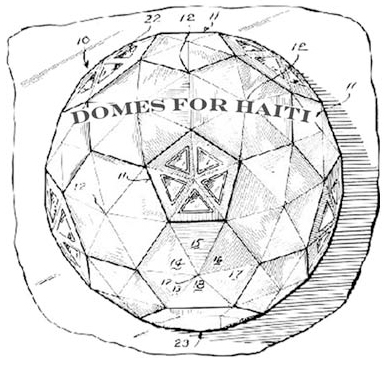

Vol. 11 No. 3
Letter to You from the BFI President
Dear Fellow E-Bulletin Readers:
Three years ago the Buckminster Fuller Institute launched the Buckminster Fuller Challenge. It is the only international prize awarding $100,000 to support the development and implementation of comprehensive strategies to solve humanity’s most pressing problems.
I am pleased to attach a short film about the Challenge, its first two awardees and 15 of the 30 semi-finalists for the 2010 prize. In addition to awarding the $100,000 prize to the winner, we also receive countless submissions of value and worthy of support. We began the Idea Index as a way to being to assist those submissions.
On June 2, 2010, we will present this year’s winner their prize at ceremonies at The National Press Club in Washington D.C. timed to coincide with opening night of The Arena Theater’s premier of “R. Buckminster Fuller: The History (and Mystery) of the Universe, June 3rd, 2010.”
An emerging priority for BFI is to organize a “Synergy Collaboratory” as an extension to the Challenge. This initiative will leverage the selection process and identify synergies between proposals via in-person forums, networking with related innovation awards, and connecting Challenge participants with venture support.
The Challenge Award we give out each year is funded for only five years and we are completing year three. The principal grant that funds the Challenge is insufficient to fully administer the Idea Index, the BFI website, the proposed “Synergy Collaboratory”, and the other important work of BFI.
We need your help to support this important work in the following ways:
1) Please forward this film link to others with an interest in the work of BFI.
2) If you can recommend any sponsors for the Challenge, the Idea Index, the website, or for events in Washington D.C. please write me personally at [email protected].
3) If you’ve already donated to BFI, we greatly appreciate your support and invite you to consider more. If you have never made a financial contribution to BFI, we urge you to consider making a donation today - your support is urgently needed.
We look forward to hearing from you!
In partnership,
Neal M. Katz
Fellows cover the 2010 Buckminster Fuller Challenge Semi-Finalists
Over the next six weeks the Buckminster Fuller Challenge Fellows will be sharing their perspective on the 2010 Buckminster Fuller Challenge Semi-Finalists. Last semester the students received a primer on Comprehensive Anticipatory Design Science (CADS), a “whole systems” approach to design, developed by Buckminster Fuller over the course of his career. This is the approach that informs the criteria for the prize. The students also worked with the review team to evaluate over 215 proposals that were submitted for this cycle. Now they get to share with you what they’ve gleaned from the process and you get to learn more about each of the semi-finalists. Enjoy!
To date the proposals that are covered are as follows:
1. Re-Sources by Elizabeth Damon
2. Lift by Prithula Prosun
3. Synchronicity by Jakub Szczęsny
4. Fighting SAM (Severe Acute Malnutrition) by Compatible Technology
5. Seed-Scale by Future Generations
6. Living Building Challenge by Jason F. McLennan and Eden Brukman
Read Here!
Trends & Perspectives
Domes For Haiti
Domes for Haiti is an all volunteer grass roots organization dedicated to providing immediate aid to families in need of shelter as a result of the January 12th earthquake. We are composed of a group of artists from Brooklyn, NYC who are pooling our resources and skills to create emergency shelters for the people in Haiti most affected by the earthquake. We are fabricating portable geodesic domes made out of recycled and donated materials from NYC’s entertainment & construction industries. The geodesic domes are 17’ in diameter, 9’ tall in the center and are large enough to house a family of five. We are an all volunteer organization. We have no affiliations with political parties or religious organizations. We are working in solidarity with the Haitian people to redirect valuable resources that are otherwise headed into the American waste stream towards creating semi permanent shelters to people at little or no cost.
Visit their website to get involved and find out more!
Are Zeppelins the Future of Air Travel?
Humans have long concocted glorious images of flying machines with an aspiration to defy gravity. With air travel called into question due to issues including fuel consumption and the effect that airplane contrails have on the earth’s atmosphere when emitted at high altitudes, we now see Zeppelins making a comeback. Considering they fly at low altitudes -- lessening any impact on the planet’s atmosphere -- and are quiet and relatively fuel efficient, this could change travel as we know it. View the slideshow on TreeHugger.
Related:
2009 Buckminster Fuller Challenge Finalist ’Green Flight World Link Initiative’
Seed Magazine Interview with Amy Cannon

Amy Cannon, green chemist and non-profit director, answers our 10 questions, discussing low-energy solar cells, training scientists to weed out toxicity, and what makes benign chemistry such a good business proposition.
Excerpt:
“Look outside of your discipline. Green chemistry solutions many times are found when a scientist digs into an area he or she is not familiar with and begins to ask questions. Often we get stuck in our own areas of expertise and miss so much of what is happening around us. Step outside of your area, get uncomfortable, and begin to ask questions - this is how you will find answers. Investigate nature, work with an engineer, walk down the hall and talk to a process chemist, a biologist, or a polymer scientist - �all of these things will help you in your research, and many times this when true innovation begins.”
Read the entire interview on SeedMagazine.com
Joris Laarman
In 2006, Laarman’s Bone Chair revolutionized the design process by using an algorithm to translate the complexity, proportion and functionality of human bone and tree growth into a chair form. The algorithm, originally used by the German car industry, enabled him to reduce and strengthen his designs by optimizing material allocation, weight and stability, while minimizing material input. In his own words, he sculpted “using mother nature’s underlying codes.”
See more of Laarman’s work here.
Resources
PopDome - Geodesic Dome Software
Visit popdome.com to download these recently released programs for easy to use dome designing software. Users can generate models and calculations for a wide range of dome types using variations in frequency, size, class type, and panel shape (triangle, rhombus, or kite). Happy building!
Review of 29 Chains to the Moon
Pittsburgh In 1938, Buckminster Fuller observed in his book Nine Chains to the Moon that there were enough humans on earth to form nine chains reaching to the moon; at our current population of 6.7 billion, we could forge an astounding 29. Fuller’s book proposed innovative solutions for improving quality of life through progressive design, despite growing populations and finite resources. The exhibition “29 Chains to the Moon” took Fuller’s utopian thesis as a jumping-off point, and aimed to instill in today’s public the same sense of awe that futuristic proposals once stirred.
The show presented three projects by artists developing 21st-century ideas (some actually in the testing stage) to tackle big problems. It might be futile to exhibit world-saving proposals in a traditional art space, where they could seem to be nothing more than conceptual exercises, but the mix of novel ideas in this show suggested that people working in diverse disciplines might collectively yield solutions to some looming predicaments. The Miller Gallery’s location on Carnegie Mellon’s campus was an appropriate setting for an exhibition of works by individuals or collaboratives with varied backgrounds.
Continue reading the review on the Art in America website.
Impromptu Bucky Bar
Dutch architecture studios DUS Architecten and Studio for Unsolicited Architecture built a temporary structural dome made of umbrellas around a lamp post in Rotterdam and held a party under it. The Bucky Bar, named in reference to Buckminster Fuller’s geodesic domes, was a fully-equipped bar complete with DJ and drinks, attracting over 300 partygoers until the police dissolved them at 2am.
Buckminster Fuller showed us how minimal energy domes could open a way to a more environmentally sustainable future, could an umbrella dome lead the way to a more socially sustainable future? The Bucky Bar is a full-scale model of such a future. A spontaneous public building made from the most common of materials, assembled with the resourcefulness of skill of architects. It shows the power of space for spontaneous gathering, for improvised shelters to host conversations, debates, games or even parties. (Via pleat farm)
Events
A Call TO ACTION
Monday, March 29, 2010
Arena Stage in Crystal City
Exclusive opportunity to meet and speak with playwright-director D.W. Jacobs, R. Buckminster Fullers daughter, Allegra Fuller Snyder, and grandson Jaime Snyder. Come explore the inspiration for the show and how Bucky’s legacy of innovation and sustainability lives on today.
More information about the event here
2012: Time for Change at Green Festival in San Francisco, April 9th, 10th and 11th
2012: Time for Change presents an optimistic alternative to apocalyptical doom and gloom. Directed by Emmy Award nominee João Amorim, the film follows journalist Daniel Pinchbeck, author of the bestselling 2012: The Return of Quetzalcoatl, on a quest for a new paradigm that integrates the archaic wisdom of tribal cultures with the scientific method. As conscious agents of evolution, we can redesign post-industrial society on ecological principles to make a world that works for all. Rather than breakdown and barbarism, 2012 heralds the birth of a regenerative planetary culture where collaboration replaces competition, where exploration of psyche and spirit becomes the new cutting edge, replacing the sterile materialism that has pushed our world to the brink.
The screening will be proceeded with a panel including Joao Amorim, Daniel Pinchbeck, Barbara Marx Hubbard, Tiokasin Ghosthorse and John Perry Barlow.
Seating is limited, buy tickets here.
More information about the festival GreenFestivals.org
DC Environmental Film Festival

A Necessary Ruin: The Story of Buckminster Fuller and the Union Tank Car Dome
March 22nd, 6 p.m.
National Building Museum, Washington D.C.
When it was completed in October 1958, the Union Tank Car Dome, ostensibly designed by the visionary Buckminster Fuller, was the largest clear-span structure in the world. A Necessary Ruin relates the compelling narrative of the dome�s history. A discussion with BFI Board Member Jonathan Marvel and filmmaker/landscape architect Evan Mather, ASLA, follows the film. Presented as part of the DC Environmental Film Festival.
For more information click here.
BFI on Facebook
BFI on Twitter
To unsubscribe from this newsletter, send email to this address.
To never receive email from The Buckminster Fuller Institute, send email to this address.
This email is sent from:
The Buckminster Fuller Institute
{domain.address}